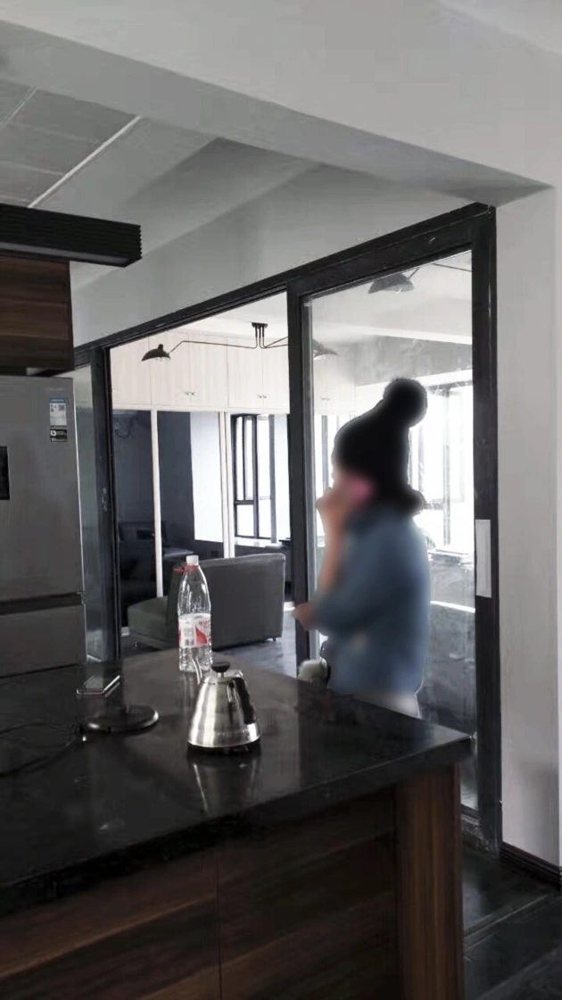
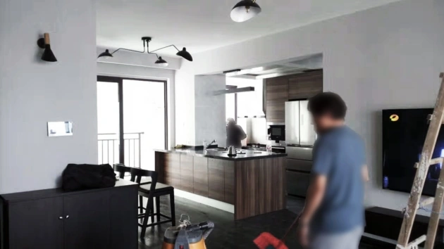
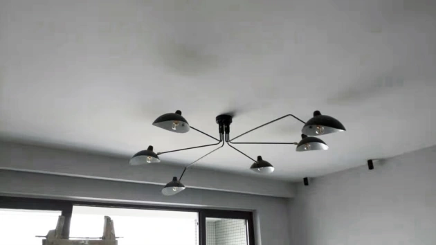
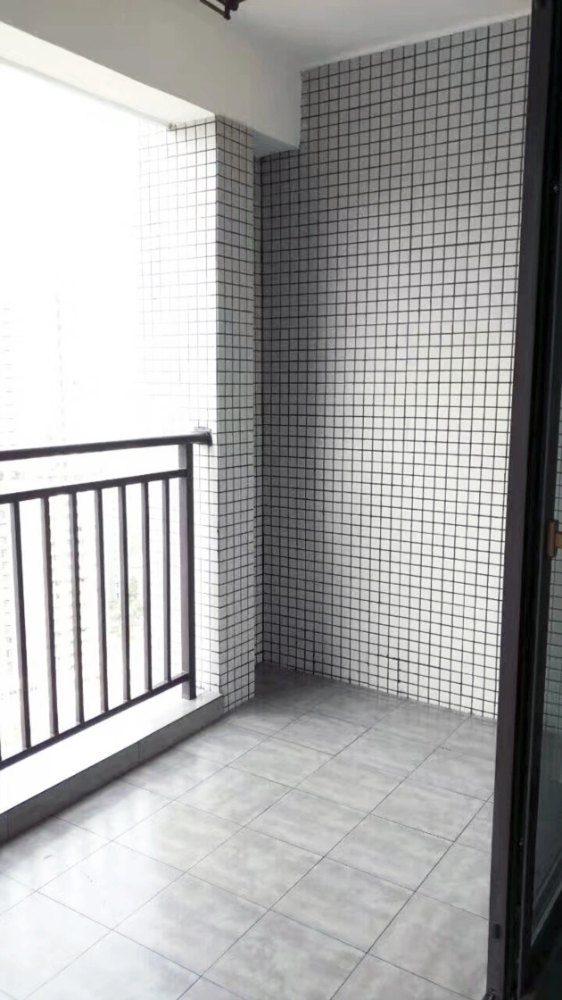
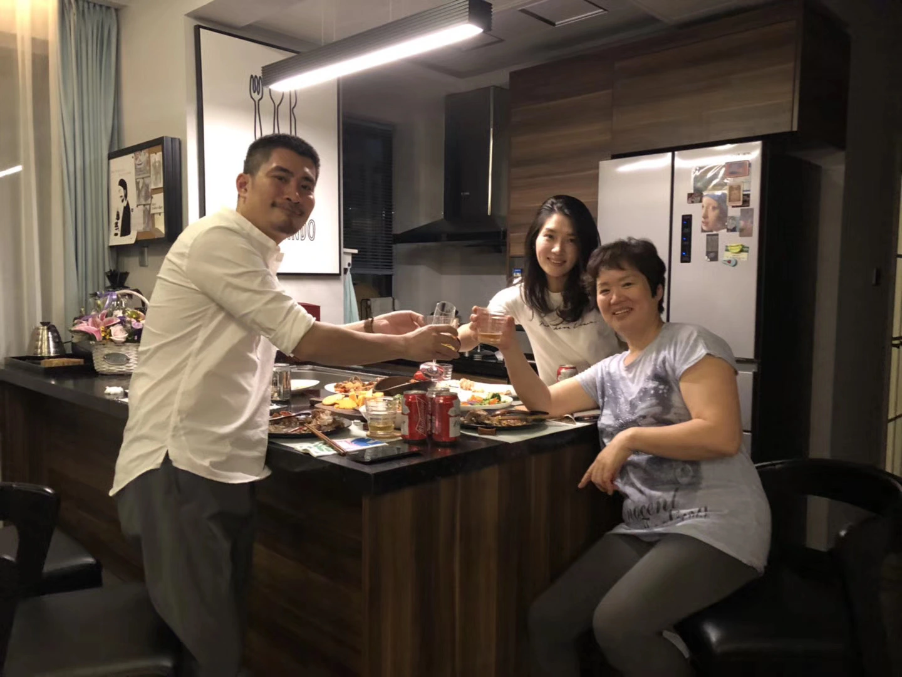

KITCHEN AS
COMMON GROUND
以厨房为生活核心Gian bếp là trung tâm sinh hoạt
厨房没有被隐藏在住宅边缘，而是与客厅、餐区和阳台共同构成日常生活的中心。深色木饰面岛台承担备餐、用餐与交流，黑框玻璃建立必要边界，同时保留光线、视线与家庭成员之间的联系。
The kitchen is not concealed at the edge of the home. It becomes common ground for cooking, dining and conversation. A dark timber island anchors the room, while black-framed glass defines the kitchen without cutting off light or visual connection.
Gian bếp không bị tách khỏi ngôi nhà mà trở thành không gian chung cho nấu ăn, dùng bữa và trò chuyện. Đảo bếp gỗ tối màu tạo điểm neo, trong khi vách kính khung đen xác lập ranh giới nhưng vẫn giữ ánh sáng và sự kết nối.
ONE SPACE,
SEVERAL ROUTINES.
玻璃推拉门把烹饪区与公共空间分开，却没有把厨房变成封闭房间。岛台位于两者之间，成为动线、视线与家庭活动汇合的位置。
Sliding glass separates cooking from the shared room without turning the kitchen into an isolated enclosure. The island sits between both conditions as a point of movement, sight and gathering.

SMALL MOVES,
CLEAR ORDER.
灯具、墙面与阳台界面不追求独立造型，而是共同强化住宅的黑、灰、木色秩序。公共空间的方向感由这些克制的细节逐步建立。



DESIGN
MEETS
DAILY LIFE.
真正的空间关系在使用中被验证。家庭成员围绕岛台坐下、站立、分享食物，说明它既是厨房操作面，也是餐桌、交流台和住宅的日常中心。
Its spatial logic becomes visible in use. The family gathers around the island to sit, stand, eat and talk—confirming that it works simultaneously as worktop, table and social centre.
Mối quan hệ không gian được kiểm chứng trong đời sống thực. Gia đình quây quần quanh đảo bếp để ăn uống và trò chuyện, biến nơi đây thành bàn thao tác, bàn ăn và trung tâm sinh hoạt.
The kitchen becomes common ground
when life gathers naturally around it.
厨房才真正成为家的中心。
khi đời sống tự nhiên quây quần quanh đó.